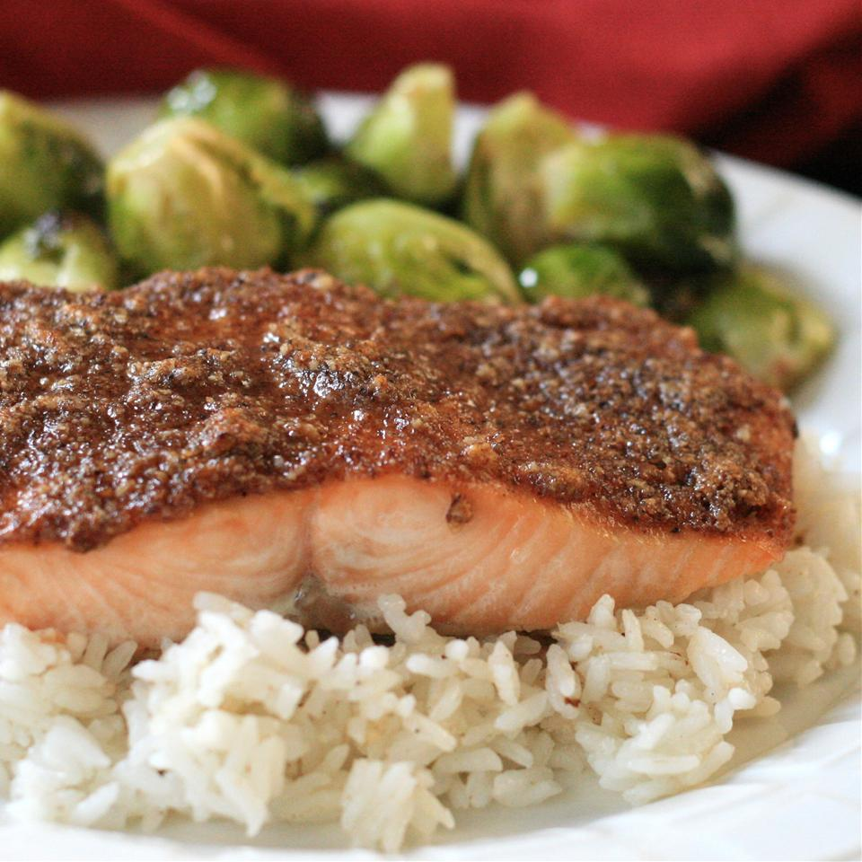

Paleo Pecan-Maple Salmon

Description
This recipe is not only easy but healthy and tasty!
Paleo, gluten-free and dairy-free!
Ingredients
- 4 (4 ounce) fillets salmon
- salt and ground black pepper to taste
- ½ cup pecans
- 3 tablespoons pure maple syrup
- 1 tablespoon apple cider vinegar
- 1 teaspoon smoked paprika
- ½ teaspoon chipotle pepper powder
- ½ teaspoon onion powder
Steps
- Place salmon fillets on a baking sheet and season
with salt and black pepper.
- Combine pecans, maple syrup, vinegar, paprika, chipotle powder, and onion powder in a food processor; pulse until
texture is crumbly. Spoon pecan mixture on top of each salmon fillet, coating the entire top surface. Refrigerate coated
salmon, uncovered, for 2 to 3 hours.
- Preheat oven to 425 degrees F (220 degrees C).
- Bake salmon in the preheated oven until fish flakes
easily with a fork, 12 to 14 minutes.